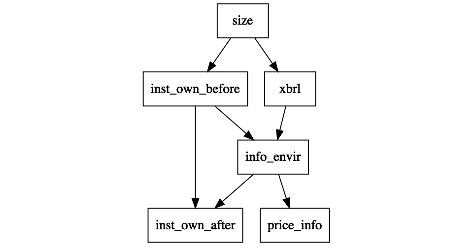
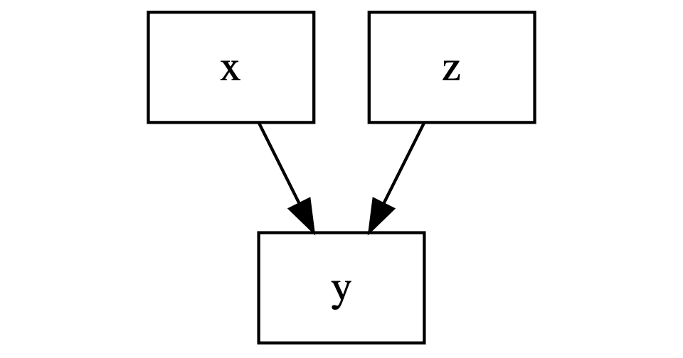
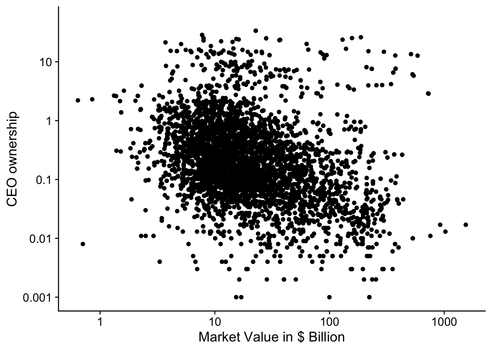

Chapter 8 Control Variables
Oh, someone’s really smart
Oh, complete control, yeah that’s a laugh
The Clash - Complete Control
Let’s quickly revise the Libby boxes. In Chapter 5, we looked how we could better understand a mathematical theory. Simulations can help us to better understand the relation between firm size and compensation. This is link (1) in the Libby boxes. In Chapter 7, we focus on the links (3) and (4). The measures in the statistical analysis depend on the theoretical assumptions. In section 7.8, we focused on how we establish statistically a link between the two measures which is link (2) in the boxes.
 Figure 8.1: Predictive Validity Framework or Libby Boxes for pay-performance sensitivity
Figure 8.1: Predictive Validity Framework or Libby Boxes for pay-performance sensitivity
8.1 R housecleaning.
We are going to run a lot of regressions in this chapter. I load
the stargazer package which helps to make tables of regressions.
suppressMessages(library(stargazer))
suppressMessages(library(tidyverse))
library(DiagrammeR)
tab_format <- getOption("knitr.table.format")We also need to reread the data and calculate some extra variables.
The most important feature is that we have a new dataset us_firm
with two important variables. The first one is ipo_employee or
whether the CEO was an employee when the company did their
initial public offering. The second one is ipo_ceo indicating
whether the CEO was already in their position when the company
launched their initial public offering. From section
7.4, we know that CEOs who are present early
in the life of the company might not have a compensation contract
that follows the efficient incentive contract.54 Not because they
are abusing their power necessarily, but because they are
intrinsically motivated to do well for the company and they are
motivated to stay in control of the company which is easier if
they have more shares than necessary from an incentive point of view.
us_comp <- readRDS("data/us-compensation.RDS") %>%
rename(total_comp = tdc1, shares = shrown_tot_pct)
us_value <- readRDS("data/us-value.RDS") %>%
rename(year = fyear, market_value = mkvalt)
us_firm <- readRDS("data/us-company.RDS")
combined <- left_join(us_comp, us_firm, by = "cusip") %>%
left_join(us_value, by = c("year", "gvkey")) %>%
mutate(ipo_ceo = I(becameceo < begdat),
ipo_employee = I(joined_co < begdat),
wealth = shares * market_value / 100) %>%
mutate(ipo_employee = if_else(is.na(ipo_employee), ipo_ceo,
ipo_employee)) %>%
mutate(ipo = ifelse(ipo_ceo, "ceo",
ifelse(ipo_employee, "employee", "none")))
combined_change <- group_by(combined, gvkey) %>%
arrange(year) %>%
mutate(
delta_total = log(total_comp) - log(lag(total_comp)),
delta_wealth = log(wealth) - log(lag(wealth)),
delta_value = log(market_value) - log(lag(market_value))) %>%
filter(!is.infinite(delta_total),
!is.infinite(delta_value),
!is.infinite(delta_wealth),
year > 2011)8.2 Directed Acyclical Graphs
In this chapter, I will use Directed Acyclical Graphs (or DAGs) to visualise and understand the theory that applies to the empirical data. DAGs follow from the work of Pearl (2009a) and Pearl (2009b). I personnaly like the introductions in Cunningham (2018) and Rohrer (2018). Figure 8.2 shows an example of a DAG for a paper that was presented in our seminar. The setting is typical for a finance and accounting paper.
The key variable xbrl indicates whether a company has been
mandated to adopt the XBRL format to publish its financial
statements. XBRL is a mark-up language like XML that puts
structure on the financial statements and makes them more easily
machine readable which should improve the information environment
for investors. While the information environment can not be
directly measured, it is possible to measure the informativeness
of the stock prices in companies. XBRL adoption has been
staggered over three years, where larger firms were mandated to
adopt in the first year, the medium ones in the second year, and
lastly the smaller firms.
Figure 8.2: Example of a Directed Acyclical Graph
The paper is also interested in whether the adoption of xbrl
has an impact on institutional owenship in the company. The
difficulties with studying this relation are given by rest of the
DAG. The size of the company also affects institutional ownership
before XBRL adoption and studies have shown that institutional
ownership affects the information environment.
Figure 8.2 serves as an example of what a DAG for a single study can look like. For a typical study, the DAG can quickly become quite complex. One of the reasons is that a social science observational study always have to account for a large number of potential effects. The second reason is that DAGs do not allow for direct feedback loops55 That is what acyclical means and we have to account for the feedback between institutional ownership and information environment by adding a time modifier (before and after) to the institutional ownership variables.
8.3 Controlling for measurement error
8.3.1 Directed Acyclical Graph (or DAG)
In the remainder of this chapter, we are interested in testing
the relation between x and y and we have to make a decision
whether we should control for z. The first reason to control
for a variable is because it affects the outcome of interest.
This is often the main reason given to control for a variable,
it affects the outcome.
Figure 8.3: Measurement error
8.3.2 Simulation
We can illustrate the problem with a simulation. We are
interested in the effect of x on y and there is another
factor z with a large effect on z. We print the regression
of y on x with and without z as a control variable with the
stargazer package (Hlavac 2018).
set.seed(12345)
obs = 500
x <- rnorm(n = obs); z <- rnorm(n = obs)
y <- rnorm(n = obs, mean = 1 * x + 20 * z, sd = 1)
d <- tibble(y = y, x = x, z = z)
yx <- lm(y ~ x, data = d)
yxz <- lm(y ~ x + z, data = d)
stargazer(yx, yxz, type = tab_format,
label = "measurement_error",
omit = c("Constant"), digits = 2,
intercept.bottom = FALSE,
star.cutoffs = c(0.05, 0.01, 0.001),
keep.stat = c("n", "rsq"))| Dependent variable: | ||
| y | ||
| (1) | (2) | |
| x | 0.97 | 1.07*** |
| (0.91) | (0.05) | |
| z | 19.99*** | |
| (0.04) | ||
| Observations | 500 | 500 |
| R2 | 0.002 | 1.00 |
| Note: | p<0.05; p<0.01; p<0.001 | |
The estimate of the effect of x regressions is close to the
true value, 1, but the standard error is much smaller when we
include z as a control variable. The reason to control for z
is to make sure that we have a precise estimate of the effect of
interest, however the estimate itself is not going to change when
z only has an effect on y.
8.3.3 Real Data
We can turn to the CEO data to illustrate the idea of controlling for other factors that might effect the variable of interest. We investigate the relationship between CEO ownership and market value of the company in Figure 8.4.
Figure 8.4: Relation between CEO ownership and market value for SP500 firms (2011-2018).
meas_data <- select(combined, market_value, shares, ipo) %>%
filter(complete.cases(.))
ownership <-
ggplot(data = meas_data,
aes(x = market_value/1000, y = shares + 0.001)) +
geom_point() +
scale_x_continuous(trans = "log",
breaks = scales::log_breaks(n = 5, base = 10),
labels = function(x) prettyNum(x, dig = 2)) +
scale_y_continuous(trans = "log",
breaks = scales::log_breaks(n = 5, base = 10),
labels = function(x) prettyNum(x, dig = 2),
limits = c(NA, 50)) +
labs(y = "CEO ownership", x = "Market Value in $ Billion")
print(ownership)## Warning: Removed 4 rows containing missing values (geom_point).We hypothesised back in Chapter 7 that
CEOs who are founders will have higher ownership for reasons that
have nothing to do with the optimal incentives. We cannot directly
measure whether CEOs are founders but we know wether they are
already CEO (ipo_ceo) or employee (ipo_employee) at the time
of the initial public offering of the company. We include those
two variables as indicator variables in the regression because it is
more likely that these CEOs are also the founders of the company56 I will
ignore the fact that we lose observations in calculating the new
variables. That is not necessarily a good idea..
form <- log(shares + 0.001) ~ log(market_value/1000)
base <- lm(form, data = combined)
form_error <- update(form, . ~ . + ipo_ceo + ipo_employee)
error <- lm(form_error, data = combined)
stargazer(base, error, type = tab_format,
label = "ownership",
digits = 2, intercept.bottom = FALSE,
star.cutoffs = c(0.05, 0.01, 0.001),
keep.stat = c("n", "rsq"))| Dependent variable: | ||
| log(shares + 0.001) | ||
| (1) | (2) | |
| Constant | -0.16*** | -0.46*** |
| (0.01) | (0.07) | |
| log(market_value/1000) | -0.47*** | -0.46*** |
| (0.01) | (0.02) | |
| ipo_ceo | 0.19 | |
| (0.11) | ||
| ipo_employee | 1.08*** | |
| (0.10) | ||
| Observations | 19,290 | 4,364 |
| R2 | 0.22 | 0.19 |
| Note: | p<0.05; p<0.01; p<0.001 | |
Unfortunately, controlling for ipo_ceo and ipo_employee does not
really improve the precision of our estimates for the effect of
market value on ownership. The standard error for the estimate stays
about the same (i.e. \(0.2\)).
8.3.4 Interpretation of Regression Outcome (or Economic Significance)
This is a bit of disgression of the main storay and you skip this section. Nevertheless, I would encourage you to go over the example as it gives a good example of how to interpret the numbers in a regression. Something, you will have to do for your thesis as well.
The regression we have estimated is
\[\begin{equation*} \mathrm{log}(S + 0.001) = \beta_0 + \beta_1 \mathrm{log}(MV) + \beta_2 \mathrm{ipo\_ceo} + \beta_3 \mathrm{ipo\_employee} \end{equation*}\]
and based on the theory, we are mainly interested in the parameter \(\beta_1\). However, something intriguing is going on with the coefficients for the two control variable. The results seem to imply that whether the CEO was an employee at the time of the IPO is a better indicator for share ownership than whether the CEO was already CEO at the time of the IPO.
That conclusion is not correct. There are a number of ways you can
see this. When the CEO was already CEO at the time of the IPO,
they were also already an employee. That means that the ipo_ceo
variable is dependent on the ipo_employee variable. If
ipo_employee = 0 then ipo_ceo = 0 and if ipo_ceo = 1 then
ipo_employee = 1. You could also see this if you make a descriptive
table with the percentage of observations with each theoretical
combination of the ipo_ceo and ipo_employee variable.
combined %>% select(ipo_ceo, ipo_employee, year) %>%
group_by(year) %>%
summarise(
ipo_both = mean(ipo_ceo * ipo_employee, na.rm = T),
ipo_ceo_only = mean(ipo_ceo * (1 - ipo_employee),
na.rm = T),
ipo_empl_only = mean((1 - ipo_ceo) * ipo_employee,
na.rm = T),
ipo_none = mean((1 - ipo_ceo) * (1 - ipo_employee),
na.rm = T)
) %>% kableExtra::kable(digits = 2, booktabs = TRUE)| year | ipo_both | ipo_ceo_only | ipo_empl_only | ipo_none |
|---|---|---|---|---|
| 2011 | 0.17 | 0 | 0.07 | 0.76 |
| 2012 | 0.17 | 0 | 0.08 | 0.76 |
| 2013 | 0.17 | 0 | 0.07 | 0.76 |
| 2014 | 0.16 | 0 | 0.06 | 0.78 |
| 2015 | 0.14 | 0 | 0.05 | 0.80 |
| 2016 | 0.14 | 0 | 0.05 | 0.82 |
| 2017 | 0.12 | 0 | 0.04 | 0.83 |
| 2018 | 0.12 | 0 | 0.03 | 0.85 |
| 2019 | 0.11 | 0 | 0.03 | 0.86 |
| 2020 | 0.05 | 0 | 0.05 | 0.90 |
The table again shows that it is impossble for a CEO to have been the
CEO at the time of the IPO but not an employee57 ipo_ceo_only equals
0 in every year.. This example shows the importance of using
descriptive statistics to better understand the data. Even if you had
not realised that there is a relation between ipo_ceo and
ipo_employee, the table would have alerted you to it.
It also shows us that we cannot interpret the coefficients separately.
The right way to interpret the coefficients is to interpret them
together. However, there is a second problem with interpreting our
regression outcomes. We modelled log(shares + 0.001) and so the
effect are a bit harder to interpret. With some rearrangement of the
regression function, we can make the interpreation easier.
\[\begin{align*} \mathrm{log}(S + 0.001) &= \beta_0 + \beta_1 \mathrm{log}(MV) + \beta_2 \mathrm{ipo\_ceo} + \beta_3 \mathrm{ipo\_employee} \\ S + 0.001 &= e^{\beta_0} e^{\beta_1 \mathrm{log}(MV)} e^{\beta_2 \mathrm{ipo\_ceo}} e^{\beta_3 \mathrm{ipo\_employee}} \\ S + 0.001 &= e^{\beta_0} MV^{\beta_1} e^{\beta_2 \mathrm{ipo\_ceo}} e^{\beta_3 \mathrm{ipo\_employee}} \end{align*}\]
This means that the relation between ownership and whether CEO is a
(likely) founder is multiplicative. For a given firm size, the CEO
owns \(e^{\beta_3}\) times more shares when they were already an employee
at time of the IPO, and \(e^{\beta_2 + \beta_3}\) times more shares when
they were already CEO (and thus also employee) at the time of the
IPO58 This ignores the \(0.001\) adjustment but it does not really make
a difference in this example.. We can easily calculate these values
in R.
beta2 <- error$coefficients["ipo_ceoTRUE"]
beta3 <- error$coefficients["ipo_employeeTRUE"]
exp(beta3)## ipo_employeeTRUE
## 2.949815exp(beta2 + beta3)## ipo_ceoTRUE
## 3.555428This means that the CEO who has already an employee at the time of IPO, has 2.9 times higher ownership and a CEO who was already CEO at the time of IPO has 3.6 times more shares than a CEO who was not in their company of similar size at the time of the IPO.
8.3.5 Better model of CEO founders
References
Page built: 2022-02-01 using R version 4.1.2 (2021-11-01)